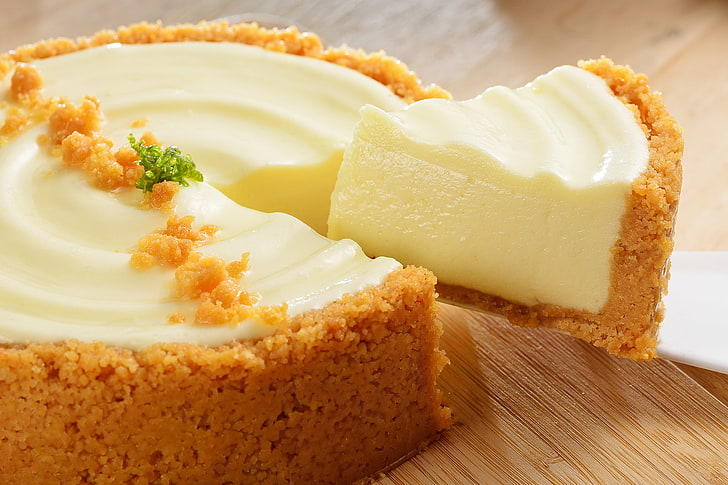

Tortas
Torta de Maçã
A Torta de Maçã é um dos símbolos tradicionais da
gastronomia americana, apesar de sua origem inglesa.
Existem diversos acompanhamentos para essa
sobremesa, com calda de caramelo, canela,
sorvete de creme, etc.
R$29,99
Torta de Damasco
Uma deliciosa torta recheada com leite condensado,
creme de leite, e é claro, o damasco, fruta de origem
asiática, de aroma marcante e poupa suculenta.
R$54,00

Torta de Queijo
Novamente uma sobremesa popular nos EUA,
o cheesecake, como lá é chamado, é uma deliciosa
torta feita com uma mistura de gordura de leite,
leite e culturade lactobacilos, agente que lhe
confere sabor ácido, o cream cheese não coagula
como um queijo comum.
R$42,00
Bolos
Pão de ló
O bolo pão de ló é um bolo muito leve, mas um pouco
seco. Este bolo preparado pelo método espumoso,
segue asseguintes proporções: 100g de farinha, 220g de
ovos, 20g a 50g de gordura, 150 g de açúcar.
R$32,50
Bolo Anjo
O bolo anjo é um bolo extremamente leve e seco.
Este bolo preparado pelo método espumoso, segue
as seguintes proporções: 100g de farinha, 350g de
claras,155g de açúcar. Esta receita não inclui a
gordura das gemas e/ou manteiga.
R$26,00
Sanduíche Victória
O bolo Sanduíche Victoria é preparado com um tipo de
bolo amanteigado denso, mas há uma receita mais leve
de bolo amanteigado preparado pelo método cremoso
que segue as seguintes proporções: 100g de farinha,
40g de ovos, 45g de manteiga, 100g de açúcar.
R$28,89
Pães
Pão Levain
O Pão Levain ou pão de ferentação natural, como o nome
sugere, é um pão cujo processo de fermentação é feito
de forma natural, sem adição de leveduras, através da
de microorganismos. Esse processo é demorado, por isso
sempre o preparamos com maior antecedência.
R$29,50/Kg

Pão Australiano
Acredita-se que esse pão surgiu de uma rede de
australiana, daí seu nome, que era servido por
acompanhado por sopa. Esse pão é ideal como
acompanhamento ou para ser recheado com carnes
defumadas ou assadas. Com sabor levemente adocicado,
casca crocante, textura macia e coloração escura,
o pão australiano tem se tornado uma opção irresistível
para muitos paladares.
R$19,90

Pão de Queijo
Não seríamos uma verdadeira padaria mineira sem o
nosso queridinho. A origem do pão de queijo ainda é
incerta. Há relatos de que a receita foi criada em Minas
Gerais, no século XVIII, quando as cozinheiras das fazendas
utilizavam em suas receitas de pães a farinha de mandioca
(mais tarde conhecida como polvilho) no lugar da farinha de
trigo (de baixa qualidade e imprópria para o consumo) que
era trazida pelos portugueses.
R$28,90/Kg
Por último mas não menos importante, o pão francês. No Brasil,
o pão francês parece ter surgido no início do século XX,
quando os burgueses da Primeira república adotaram a cultura
francesa da “Belle époque” como padrão, não apenas na gastronomia,
mas também na moda, nas artes e nos hábitos sociais. As padarias,
que ainda faziam um pão escuro, foram instadas a imitar uns pãezinhos
alongados com miolo branco e crosta dourada. Aparentemente, a receita
não reproduz o pão que se consumia em França nessa altura, mas ficou
conhecido como “pão francês”, conhecido noutros países como
“pão brasileiro”
R$15,00